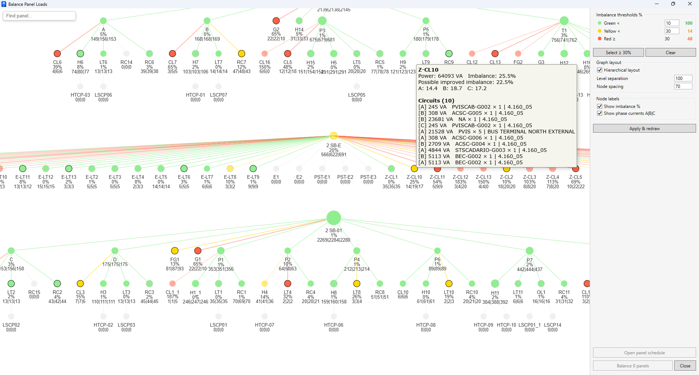

Balance Panels
Table of contents
The tool is designed to analyze the panel hierarchy and automatically redistribute circuits to minimize phase load imbalance.
Main Features
- Interactive Panel Map: Visualization of the project’s entire electrical network as a graph. Two modes are supported:
- Hierarchical: Classic “top-down” power tree.
- Organic: A physics-based model, useful for finding isolated groups or working with very large networks.
- Imbalance Diagnostics: Panel colors change depending on the percentage of phase imbalance.
- Potential Indicator: The brightness of the nodes (circles) shows how much the balance can be improved in a given panel. If the circle is dim, the balance is close to ideal for that specific set of circuits.
- Smart Balancing: The algorithm tests combinations of circuits (1P, 2P, 3P) to achieve the minimum theoretical imbalance.

Color Coding
Node colors depend on the configured Thresholds at the top left of the window:
- Green Zone: Balance is within normal limits (default <5%).
- Yellow Zone: Medium imbalance.
- Red Zone: High imbalance, requires correction.
- Black Border: The panel has high improvement potential (theoretical balance is significantly better than current).
- White/Grey Border: Balance is already close to the maximum possible for the current set of loads.
Instructions
- Launch: Click the Balance Panels button on the Sener panel.
- Analysis: Examine the panel tree. Use the search box (top) to quickly find a specific panel.
- Selection: Select one or more panels on the graph.
- View Settings: You can change Hierarchical mode, Level Separation, and Node Spacing. These changes are applied only after clicking the Redraw button.
- Balancing: Click the Balance button. The tool will attempt to automatically move slots in the panel schedule.
- Results: Upon completion, you will receive a report with “Before” and “After” imbalance metrics.
- Display Modes: Use the Hierarchical checkbox in settings. When enabled, the graph builds a clear tree structure from source to consumers. When disabled, the graph enters “spider web” (organic) mode, where nodes are placed more freely, which is useful for an overview of complex systems.
Troubleshooting (Workflow)
In some cases, the Revit API does not allow the program to automatically move multi-phase circuits (2P, 3P) due to system limitations. If an error occurs during balancing:
- Select the problematic panel in the tool window.
- Click the Open Panel Schedule View button (table icon).
- In the standard Revit panel schedule view that opens, run the built-in Rebalance loads command.
Currently (due to the technical limitations with multi-phase panels), the tool serves as a “navigator,” helping you focus only on the panels that truly require attention and can be improved.